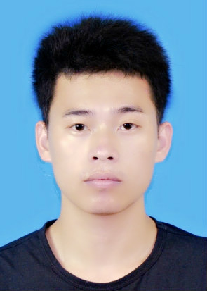
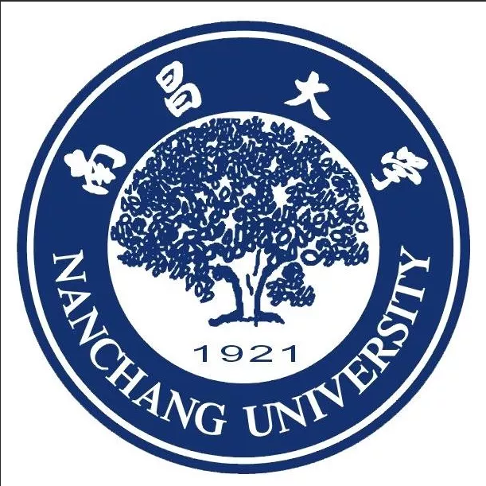
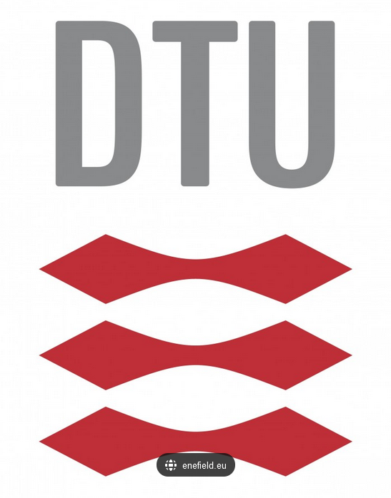

|  | 博士 |
我主要研究领域包括磁光单向波导及其在亚波长及超亚波长尺度下的功能器件研究，目前已设计并研究了多种支持表面磁等离子体（surface manetoplasmons,SMPs）完全单向传输（抗背向散射）的波导结构。 同时，基于所提出的单向波导，已实现了诸如滤波器、电磁存储器、缓存器以及磁场增强器等功能器件。所研究的频段既包含传统的微波波段，也有近年来快速发展的太赫兹波段； 另外，我也对折射率近似为零（index-near-zero,INZ）电磁波及材料、全光逻辑器件等领域有所涉及。
|  | 博士 | 南昌大学 | 材料科学与工程 | 导师：沈林放、邓晓华 (2017.9 ~ 2020.7) |
|  | 访学博士 | 丹麦技术大学 | 光学工程 | 导师：肖三水 (2018.11 ~ 2020.2) |
| 硕士 | 南昌大学 | 等离子体物理 | 导师：沈林放 (2014.9 ~ 2017.7) |
| 本科 | 应用物理学 | 南昌大学 (2010.9 ~ 2014.7) |
磁光单向波导：由于外磁场或者剩磁的存在，磁光系统中电磁波的传输特性呈现非互易性，通常利用这种特性可以设计支持电磁波单向传输的单向波导结构。 而这些结构也将可以用在一些特定功能的应用上，如利用单向波导进行能量缓存与释放，进行光缓存及光开关的应用。
INZ电磁模式理论及应用研究：折射率近似为零（index-near-zero，INZ）电磁模式被广泛研究与介电常数近似为零（epsilon-near-zero，ENZ）材料中，由于其特殊的空间相位不变性，其主要可用来进行如光学隐身等领域
全光逻辑器件：
J. Xu, S. Xiao, P. He, Y. Wang, Y. Shen, L. Hong*, Y. Luo*, and B. He*, "Realization of broadband truly rainbow trapping in gradient-index metamaterials," Opt. Express 30(3), 3941-395 3(2022).[PDF]
L. Hong, Y. Wang, Y. Shen, X. Deng, K. Yuan, S. Xiao, and J. Xu*, "Broadband energy squeezing and tunneling based on unidirectional modes," Opt. Mater. Express 11(9), 2975 (2021).[PDF]
J. Xu, T. Li, L. Zhang, B. He, D. Feng, and Y. Zhou*, "One‐step synthesis of anionic S‐substitution toward Ni2P (S) nanowires on nickel foam for enhanced hydrogen evolution reaction," Int. J. Energy Res. 45(11), 16973–16983 (2021).[PDF]
J. Xu, P. He, D. Feng, K. Yong, L. Hong, Y. Shen, and Y. Zhou*, "Slow wave and truly rainbow trapping in a one-way terahertz waveguide," Opt. Express 29(7), 11328 (2021).[PDF]
J. Xu, Q. Shen, K. Yuan, X. Deng, Y. Shen, H. Zhang, C. Wu, S. Xiao, and L. Shen*, "Trapping and releasing bidirectional rainbow at terahertz frequencies," Opt. Communications 473, 125999 (2020).[PDF]
J. Xu, X. Deng, H. Zhang*, C. Wu, M. Wubs, S. Xiao, and L. Shen*, "Ultra-subwavelength focusing and giant magnetic-field enhancement in a low-loss one-way waveguide based on remanence," J. Opt. 22(2), 025003 (2020).[PDF]
J. Xu, S. Xiao, C. Wu, H. Zhang, X. Deng, and L. Shen*, "Broadband one-way propagation and rainbow trapping of terahertz radiations," Opt. Express 27(8), 10659 (2019).[PDF]
Q. Shen, Y. You, J. Xu, Y. Shen, X. Deng, Z. Wang, W. Min*, L. Shen, and S. Xiao*, "Mechanically scanned leaky-wave antenna based on a topological one-way waveguide," Front. Phys. 15(3), 33601 (2020).[PDF]
Q. Shen, L. Shen*, W. Min, J. Xu, C. Wu, X. Deng, and S. Xiao*, "Trapping a magnetic rainbow by using a one-way magnetostatic-like mode," Opt. Mater. Express 9(11), 4399 (2019).[PDF]
L. Shen, J. Xu, Y. You, K. Yuan*, and X. Deng, "One-Way Electromagnetic Mode Guided by the Mechanism of Total Internal Reflection," IEEE Photon. Technol. Lett. 30(2), 133–136 (2018).[PDF]
L. He, Q. Shen, J. Xu, Y. You, T. Yu, L. Shen*, and X. Deng*, "One-way edge modes in a photonic crystal of semiconductor at terahertz frequencies," Sci. Rep. 8(1), 8165 (2018).[PDF]
国家自然科学基金委员会，地区科学基金项目，项目编号：61861031，磁化等离子体鞘套内太赫兹波传播特性的研究，2019-01至2022-12，37万元，在研，参与
西南医科大学校级项目，项目编号：20/00160222，微波与太赫兹亚波长功能器件研究，2021-12至今，2万元，在研，主持